Игроки 1,2 + Квестопутешествие 1,2
Игроки / The Gamers

Год выпуска: 2002
Страна: США
Жанр: приключения, комедия, фентези, игровое видео
Продолжительность: 00:47:20
Перевод: Любительский (многоголосый закадровый)
Режиссер: Мэтт Ванцил
В главных ролях: Эмили Олсон, Мэтт Камерон, Мэтт Шимкус, Фил М. Прайс, Нэйтан Райс, Джастин МакГрегор, Крис Даппенталер, Джефф Майлз, Кати Вейдманн, Джен Поунс
Описание: Жизнь игроков в D&D и их персонажей в игровом мире. Да, так оно всё и бывает! :-)
Доп. информация: Релиз был сделан из родного DVD. Все допы не содержали ничего интересного и были выкинуты, видео переконвертировано в PAL.
Имеются оригинальная и русская озвучка, а также русские и английские субтитры. Перевод вылизан как на предмет соответствия оригиналу, так и с точки зрения сложившегося лексикона AD&D.
В раздачу включены накатки и обложки. Меню сделано новое, без излишеств.
Качество: DVD5
Формат: DVD Video
Видео: PAL 16:9 (720x576) VBR
Аудио: Русский (Dolby AC3, 2 ch), English (Dolby AC3, 2 ch)

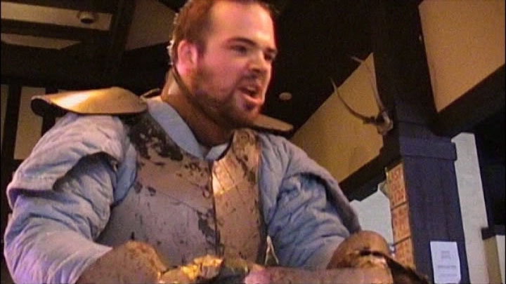
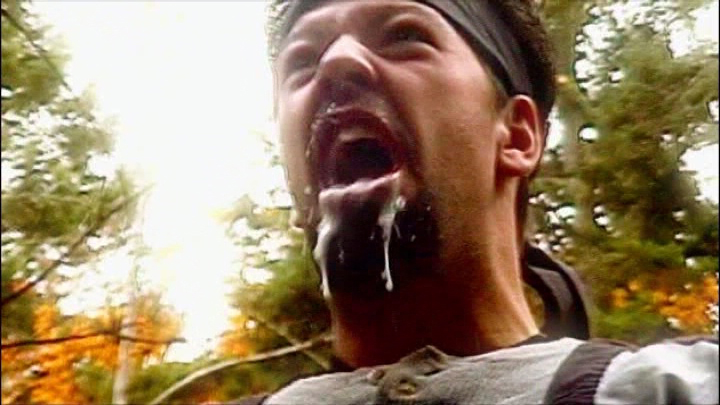
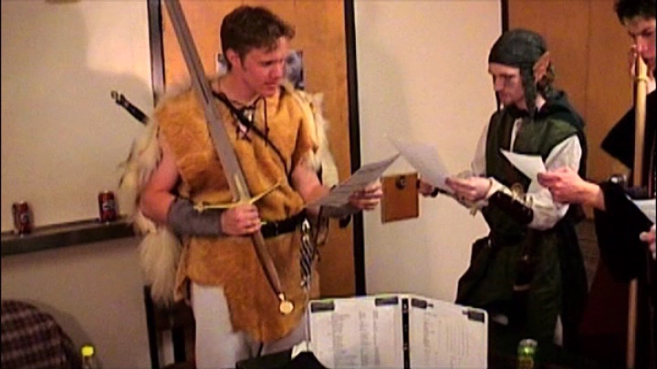
http://free-torrents.org/forum/viewtopic1.php?t=182762
DVD: https://yadi.sk/d/XG_c5SnzrnqRi
avi (только перевод, без субтитров): https://yadi.sk/i/AjXGkjb4rnqSJ
Игроки 2: Маразм крепчал / The Gamers 2: Dorkness rising
Год выпуска: 2008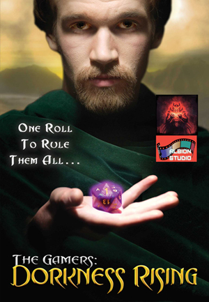
Страна: США
Жанр: приключения, комедия, фентези, игровое видео
Продолжительность: 01:45:23
Перевод: Любительский (многоголосый закадровый)
Режиссер: Мэтт Ванцил
В ролях: Натан Райс / Nathan Rice, Брайн Левис / Brian Lewis, Кэрол Роско / Carol Roscoe, Кристиан Дойл / Christian Doyle, Скотт С. Браун / Scott C. Brown и др.
Описание: Продолжение широко известного в узких кругах игроков в AD&D фильма «The Gamers».
Доп. информация: Релиз был сделан из родного DVD. Все допы не содержали ничего интересного и были выкинуты, видео переконвертировано в PAL.
Имеются оригинальная и русская озвучка, а также русские и английские субтитры. Перевод вылизан как на предмет соответствия оригиналу, так и с точки зрения сложившегося лексикона AD&D.
В раздачу включены накатки и обложки. Меню сделано новое, без излишеств.
Качество: DVD5
Формат: DVD Video
Видео: PAL 16:9 (720x576) VBR
Аудио: Русский (Dolby AC3, 2 ch), English (Dolby AC3, 2 ch)
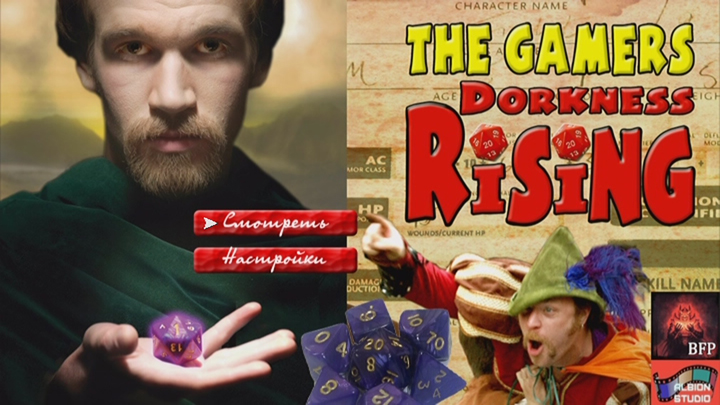
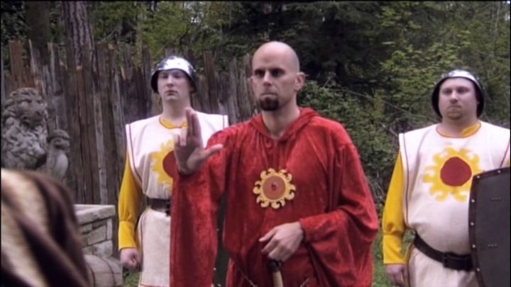
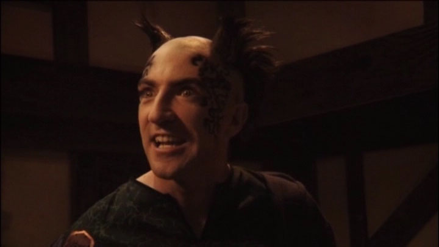
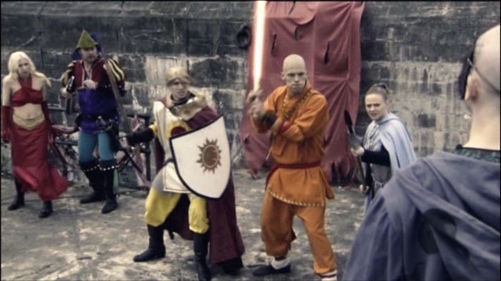
http://free-torrents.org/forum/viewtopic1.php?t=212213
DVD: https://yadi.sk/d/buf9BY5_rnqdr
avi (только перевод, без субтитров): https://yadi.sk/i/4tnUvwOMrnqey
КвестоПутешествие 1-2 / JourneyQuest 1-2
Год выпуска: 2010-2012
Страна: США
Жанр: комедия, фентези
Продолжительность: 00:44:29+01:33:50
Перевод: Авторский (одноголосый закадровый)
Режиссер: Мэтт Вэнсил
В ролях: Christian Doyle, Anne Kennedy, Brian Lewis, Kevin Pitman, Emilie Rommel Shimkus, Nathan Rice, Bryan Bender, Scott C. Brown, Kevin Inouye, Samara Lerman, Jennifer Page, Matt Shimkus
Описание: Группа весьма бестолковых приключенцев, преследуемая собственным бардом, путешествует по лесам в поисках мифического артефакта... Однако не всё так просто, и сюжет готовит героям немало "очень неприятных поворотов".
Тот же режиссёр, что снял "The Gamers". В сериале нет игроков, просто фентезийная жизнь по мотивам «как бывает в AD&D».
Доп. информация: DVD оригинала не существует. Этот DVD был собран из релизов серий в качестве 1080p, при этом серии были по 7 минут, из которых минимум 2 — титры и проч., что было вырезано. В результате вместо коротких серий получилось два фильма, что куда удобнее смотреть.
Релиз был ужат до DVD5 (с размера 5.7 Gb), но, поскольку в фильмах мало быстрых действий и т.п., получилось вполне смотрибельная версия. Оригинальное качество легко ищется на торрентах.
На этом диске — только русская дорожка без субтитров (перевод, хотя и одноголосый, очень качественный). В раздачу включены накатки и обложки. К сожалению, отстуствуют оригинальные субтитры: поскольку это веб-релиз, то их не было изначально.
Качество: DVD5 (сжатый)
Формат: DVD Video
Видео: PAL 16:9, 720x576@720x405, VBR
Аудио: Русский (Dolby AC3, 2 ch)

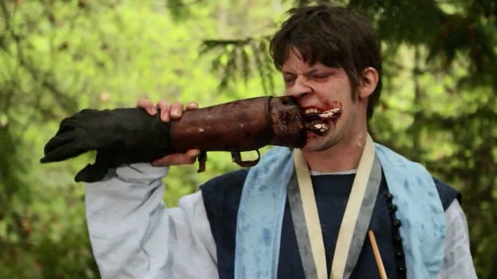
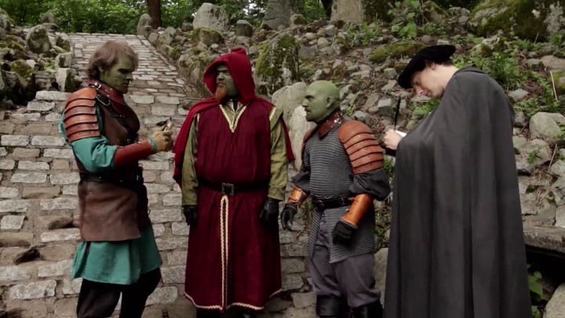
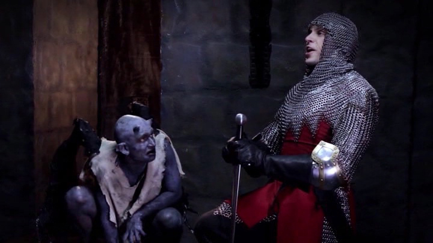
http://free-torrents.org/forum/viewtopic1.php?p=2602755
DVD: https://yadi.sk/d/eKS-oDWKrnqm5
mkv (только перевод, без субтитров): https://yadi.sk/i/QKN3HQjZrnqmL
P.S. Фильм "The Gamers 3 Hands of Fate" существует, но представляет собой УГ, а именно -- мылодраму, где от "Игроков" остались отдельные сцены, при этом комедии не осталось вообще.
Продолжение "КвестоПутешествия" режиссёром задумано, но ждут доната на краудфандинге. При этом соборали уже чуть ли не полляма и выпускают всякие побочные проекты про себя. любимых, вместо того, чтобы делом заняться.
На тытрубе выложены "Игроки 2" в HD, но я кглянул картинку -- это, похоже, просто перекодили в большее разрешение, размытенько.